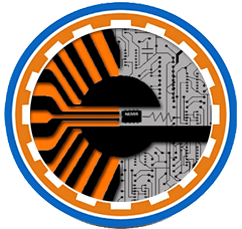
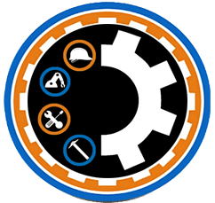

Somo una institución modelo en la educación técnico profesional,con propuestas educativas y pastorales concretas y de calidad,
con un personal altamente cualificado e identificado con el estilo pedagógico salesiano, que involucre la familia y promueva
el liderazgo con equidad de género, conservando la credibilidad y la confianza de la sociedad y el empresariado, estando a
la vanguardia de la tecnología y las innovaciones educativas, que nos permita ofrecer una formación integral que responda a
las exigencias del mundo actual.
MF_407_2: Corte de tejidos y laminados.
MF_408_2: Corte de pieles y cueros.
MF_423_2: Montaje y acabado de artículos de marroquinería.
MF_427_2: Módulo de formación en centros de trabajo.
MF_053_3: Análisis y diseño de sistemas informáticos.
MF_054_3: Desarrollo de aplicaciones y sistemas de información.
MF_055_3: Implementación y mantenimiento de aplicaciones y sistemas informáticos.
MF_056_3: Diseño y desarrollo de base de datos.
MF_057_3: Administración de base de datos.
MF_058_3: Análisis y diseño de reporte.
MF_059_3: Diseño de portales web y recursos multimedia.
MF_060_3: Desarrollo e implementación de soluciones web y multimedia.
MF_061_3: Formación en centros de trabajo.
MF_398_3: Motor de combustión interna. 
MF_399_3: Componentes y sistemas auxiliares del motor.
MF_300_3: Sistemas de dirección y suspensión.
MF_301_3: Sistemas de alimentación, inyección y sobrealimentación.
MF_304_3: Sistemas eléctricos y electrónicos.
MF_435_3: Desarrollo de productos de ebanistería y carpintería.
MF_436_3: Documentación de fabricación en ebanistería y carpintería.
MF_437_3: Control de la realización de prototipos.
MF_438_3: Logística y gestión de almacén.
MF_439_3: Ensamblado de muebles.
UC_463_3 Ensamblar y montar equipos eléctricos y electrónicos. 
UC_464_3 Realizar el mantenimiento a equipos que contienen circuitos microprogramables.
UC_465_3 Realizar mantenimiento a equipos electrónicos de potencia y control.
UC_468_3 Montar sistemas de automatización industrial y robótica.
UC_361_3: Realizar actividades de información, recepción y comunicación con clientes internos y externos, según los protocolos establecidos en la organización. 
UC_362_3: Organizar, actualizar y archivar la información contenida en soporte convencional y/o digital, mediante los procedimientos establecidos de seguridad y protección de datos.
UC_348_3: Realizar registros de contabilidad en soporte convencional e informático, conforme con la legislación vigente.
UC_453_3: Representar gráficamente instalaciones y redes eléctricas de baja tensión, siguiendo la normativa eléctrica. 
UC_454_3: Montar y mantener instalaciones eléctricas de baja tensión en edificios de viviendas.
UC_455_3: Montar y mantener instalaciones eléctricas de baja tensión en edificios comerciales, de oficinas y de una o varias industrias.
UC_352_3: Establecer los procesos de mecanizado de los productos por fabricar. 
UC_353_3: Dibujar los productos por fabricar y desarrollar el programa de diseño asistido por computador (CAD).
UC_362_3: Prevenir los riesgos laborales; y proteger el medioambiente en los procesos industriales de fabricación, instalación y mantenimiento.